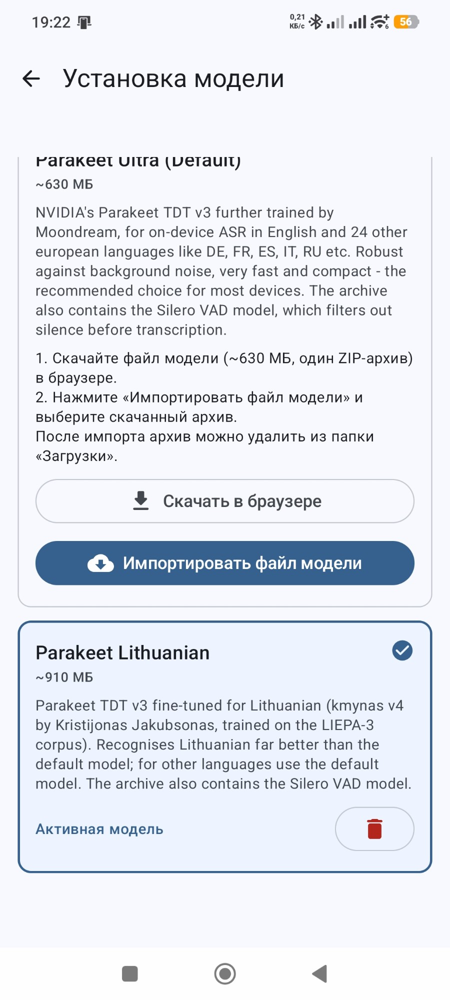
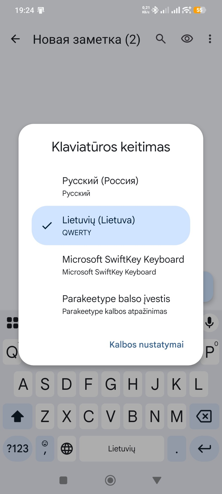
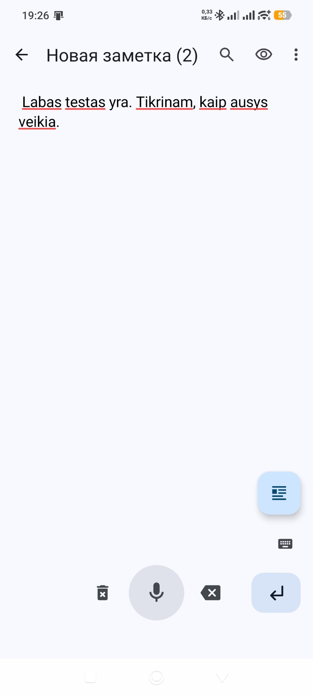
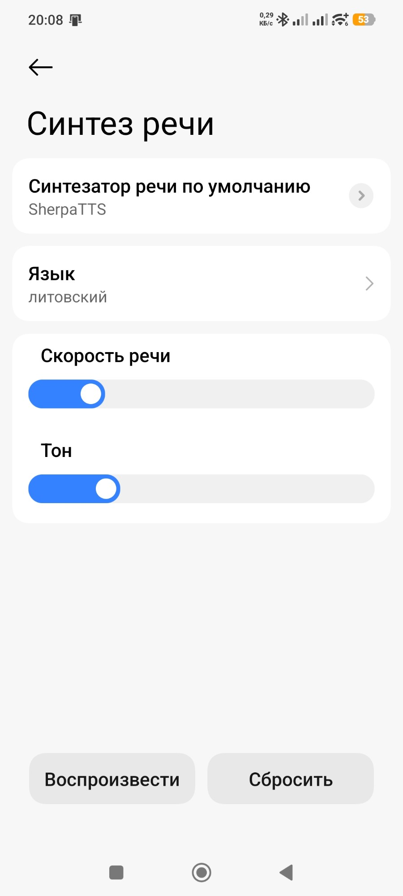
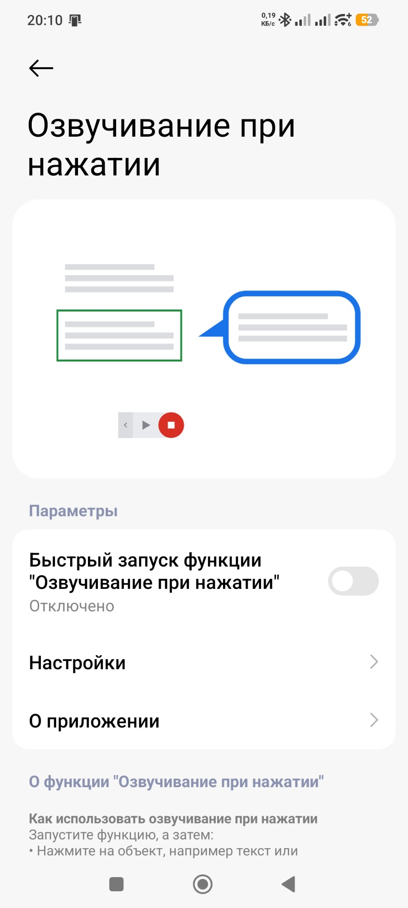
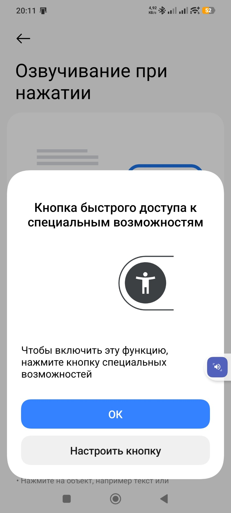

Sukurta naudojant DI: paketą ruošė ir matavo Claude (Anthropic) kartu su Robertu, baneris sukurtas DI. Ingutė yra sintetinis balsas.
Kam tai
Kad telefonas skaitytų lietuviškai
Ingutė tampa telefono „Teksto į kalbą“ balsu. Ją naudoja programos, kurios moka skaityti garsiai: straipsnių ir knygų skaityklės, ekrano skaitytuvas.
Be interneto
Balsas veikia pačiame telefone. Internetas reikalingas tik vieną kartą — programai ir balsui parsisiųsti.
Nemokamai
Ir balsas, ir programa SherpaTTS — nemokami, atviro kodo, be reklamų ir paskyrų.
Ką sutaiso
Dingstantį „s“
Telefono tarimo variklis eSpeak NG lietuvišką „s“ dažnai rašo kitu ženklu, kurio Ingutė beveik nemokyta. Be pataisos „pasiimk skėtį“ skamba kaip „paimk kėtį“. Pataisa yra faile tokens.txt.
Kirčius
Pats eSpeak NG kirtį į tą pačią vietą kaip žodynas deda tik 53 % daugiaskiemenių žodžių: dãbar, lãbai, Lietùvos. Su mūsų žodynu (lt_dict) — 99,3 %: dabar̃, labaĩ, Lietuvõs.
Lietuviškas kalbos atpažinimo modelis klausė 12 kasdienių sakinių. Žodžių klaidų: be pataisų 7,7 %, su „s“ pataisa 4,4 %, su kirčiais 1,1 %. Išbandyta Xiaomi 12T Pro, Android 15, SherpaTTS 3.4.
Kaip įdiegti (apie 10 min.)
Įsidiek SherpaTTS iš F-Droid — Google Play'uje jos nėra, ten paieška rodo kitas, reklamines programas. Failas: org.woheller69.ttsengine_34.apk (3.4, 91 MB). Tikroji programa vadinasi SherpaTTS, be reklamų.
Parsisiųsk į telefoną iš leidimo du failus: lt_LT-ingute-medium.onnx ir tokens.txt.
SherpaTTS → „INSTALL PIPER MODEL FROM SD“: kalbos kodas lit, pavadinimas Ingute, modelis ir tokens failai → OK.
Telefono nustatymai → „Teksto į kalbą išvestis“ → variklis SherpaTTS, kalba lietuvių → „Klausyti pavyzdžio“.
Ingutė jau kalba su „s“ pataisa. Kirčiams — dar vienas žingsnis per kompiuterį.
5. Kirčiai — per kompiuterį
Naujesni Android'ai neleidžia failų tvarkyklei rašyti į kitų programų aplankus, todėl lt_dict dedamas su Google adb. Telefone: Nustatymai → Apie telefoną → 7 kartus paspausk versijos numerį → kūrėjo nustatymuose įjunk „USB derinimas“ → prijunk laidu ir patvirtink.
Pirma patikrink, ar tavo SherpaTTS žodynas originalus (turi būti 5426503daf0a29836d0f168d38b38581; jei kitoks — nekeisk):
Paklausyk: „Dabar labai gera diena, nes Lietuvos rinktinė laimėjo.“ Grąžinti — lt_dict_orig pervadinti atgal į lt_dict. Iš naujo įdiegus SherpaTTS, šį žingsnį reikia kartoti.
Ausys — diktavimas lietuviškai
Nuo 1.1.0: kalbi į telefoną lietuviškai, ir tekstas atsiranda bet kuriame teksto lauke. Tai daro atviro kodo balso klaviatūra Parakeetype (F-Droid): kalbą ji atpažįsta pačiame telefone ir interneto leidimo neturi. Jos numatytasis modelis lietuviškai girdi prastai, o mūsų archyvas parakeet-lt-kmynas-int8.zip (955 MB) duoda jai lietuviškas ausis.
žodžių klaidų dalis
FLEURS (986 sakiniai)
trumpos komandos (127)
Parakeetype numatytasis modelis
27,1 %
80,4 %
su šiomis ausimis
10,6 %
17,0 %
Būsena (2026-10-29): kad F-Droid Parakeetype priimtų archyvą, jos autorius turi sujungti mūsų pasiūlymą theScrabi/Parakeetype#1. Iki tol programą su lietuvišku modeliu galima susikompiliuoti pačiam; kaip, rašoma README.
Parsisiųsk į telefonąparakeet-lt-kmynas-int8.zip iš leidimo.
Parakeetype: įjunk klaviatūrą, leisk mikrofoną → „Įdiegti“ → slink iki kortelės Parakeet Lithuanian → „Importuoti modelio failą“ → „Nustatyti kaip aktyvų“.
Diktuok: teksto lauke perjunk klaviatūrą į „Parakeetype balso įvestis“ (Gboard'e ilgai laikyk 🌐), laikyk mikrofono mygtuką ir kalbėk.
Atgal į įprastą klaviatūrą — mažas klaviatūros ženkliukas dešinėje, virš Enter.



Tik lietuvių kalba; telefone užima apie 910 MB, reikia Android 12 ar naujesnio. Išbandyta Roberto telefone (Xiaomi 12T Pro, Android 15).
Kaip naudotis kasdien
Įdiegti dar nereiškia, kad telefonas pats pradės kalbėti ar klausyti. Čia — ką padaryti vieną kartą ir kaip paskui naudotis. Meniu pavadinimai telefonuose šiek tiek skiriasi, todėl paprasčiausia juos rasti nustatymų paieškoje. Ekranai — iš Xiaomi telefono rusiška kalba.
Kad telefonas skaitytų Ingutės balsu
Ingutė — telefono balsas (vieną kartą). Nustatymų paieškoje įrašyk „teksto į kalbą“ (rusiškai „синтез“). Numatytasis variklis → SherpaTTS (Android perspės, kad variklis „gali rinkti tekstą“ — taip rodo kiekvienam ne Google balsui; spausk OK). Kalba → lietuvių. Klausyti pavyzdžio — turi prabilti Ingutė.
Kad perskaitytų bet kokį tekstą ekrane (vieną kartą). Nustatymų paieškoje įrašyk „Select to Speak“ (rusiškai „озвуч“ → „Озвучивание при нажатии“), įjunk jungiklį ir leisk matyti ekraną. Ekrano krašte atsiras mėlynas mygtukas.
Kasdien: atsidaryk SMS, laišką ar straipsnį → paspausk mėlyną mygtuką → paliesk pastraipą, ir Ingutė ją perskaitys (▶ — visą ekraną, ■ — sustabdo).



Kad telefonas rašytų, ką sakai (ausys)
Atsidaryk vietą, kur rašai: SMS, užrašus, paiešką.
Perjunk klaviatūrą į Parakeetype: Gboard'e ilgai laikyk 🌐 → „Parakeetype balso įvestis“.
Laikyk mikrofono mygtuką ir kalbėk. Atleidus tekstas atsiranda; taškus, kablelius ir didžiąsias raides programa sudeda pati.
Atgal į įprastą klaviatūrą — mažas klaviatūros ženkliukas dešinėje, virš Enter.
Nesiseka? Nebijok klausti. Atsidaryk bet kurį DI pokalbį (ChatGPT, Claude, Gemini) ir įklijuok: Perskaityk https://raw.githubusercontent.com/RobertasTa/android-lt/main/AI_CONSULTANT_BRIEF.md ir padėk man su Android LT. Tada parašyk, kas neišeina, ir pridėk ekrano nuotrauką — tas DI žino visus šiuos žingsnius ir kalbės su tavimi lietuviškai.
Privatumas — tiesiai
Tekstas ir garsas iš telefono neišeina: balsas sukasi telefone. Šis paketas — tik failai; jokios programos, kuri kur nors jungtųsi, jame nėra. SherpaTTS į internetą eina tik tada, kai pats spaudi siųstis kalbą iš jos sąrašo. Parakeetype interneto leidimo neturi visai: modelio archyvą parsisiunti pats.
Ribos
Skaičius ir santrumpas skaito eSpeak NG pats („15:25 val.“ gali skambėti keistai).
Perduodama tik kirčio vieta, ne priegaidė.
Apie 9 % žodžių žodyne nėra — jiems kirtį spėja eSpeak NG.
lt_dict sudarytas SherpaTTS 3.4 — kitai versijai pirma patikrink md5.
SherpaTTS kūrėjai nesutinka su Google tapatybės reikalavimu, kuris visame pasaulyje planuojamas 2027 m.; jų programa apie tai įspėja pati.
Tai sintetinis balsas — natūralus, bet ne žmogus.
Licencijos
Balsas — NewGenLTU Open RAIL-D 1.0: naudoti galima laisvai ir nemokamai, komercinio naudojimo nedraudžia, galioja naudojimo apribojimai; perduodant toliau kartu perduoti LICENSE-VOICE ir nurodyti kilmę. Ingutė išaugo iš Reginutės modelio, mūsų Python įrankiais.
lt_dict ir jo šaltiniai — GPL-3.0 (eSpeak NG duomenys). Kirčių vietos — iš dviejų CC BY 4.0 darbų: LIEPA garsyno anotacijos (Vilniaus universitetas) ir Arūno Smaliuko g2p-lt-lexicon (THIRD_PARTY.md).
Ausys — CC BY 4.0: NVIDIA Parakeet TDT 0.6B v3, lietuviškai apmokytas Kristijono Jakubsono („kmynas v4“, LIEPA-3); mūsų pakeitimai surašyti archyvo NOTICE.txt. Silero VAD archyve — MIT. Parakeetype — atskira programa (GPL-3.0).
Atvirkščiai: kalbi lietuviškai, ir tekstas atsiranda bet kurioje kompiuterio programoje.
Ačiū
SherpaTTS (woheller69), sherpa-onnx (k2-fsa), eSpeak NG, Piper ir Michaelui Hansenui; LIEPA garsyno kūrėjams (Vilniaus universitetas) ir Arūnui Smaliukui; Parakeetype (theScrabi), Kristijonui Jakubsonui už lietuvišką Parakeet („kmynas“) ir NVIDIA už Parakeet.
Nesiseka? Įklijuok į bet kurį DI pokalbį: Perskaityk https://raw.githubusercontent.com/RobertasTa/android-lt/main/AI_CONSULTANT_BRIEF.md ir padėk man su Android LT. Klausimai — Issues.